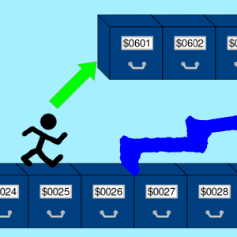

JSR
Skok do podprogramu
Opis

Wykonuje skok do innego miejsca w programie, przy czym na stos zostaje położony adres powrotny wskazujący na miejsce obok miejsca w pamięci, w którym wykonano rozkaz JSR.
Za pomocą tego rozkazu można zasymulować podprogram, lub w językach wysokiego poziomu procedurę lub funkcję. Można napisać kod asemblerowy do wielokrotnego wykorzystania, do którego można skoczyć i z niego wrócić do punktu pierwotnego po wykonaniu.
Aby powrócić z podprogramu, należy wywołać rozkaz RTS. Należy się upewnić, czy na stosie znajduje się właściwy adres powrotny, gdyż ten rozkaz jest "bezkrytyczny".
Tabela opkodów
| Opkod | Tryb adresowania | Czas wykonywania (cykle) |
|---|---|---|
| $20 |  |
6 |